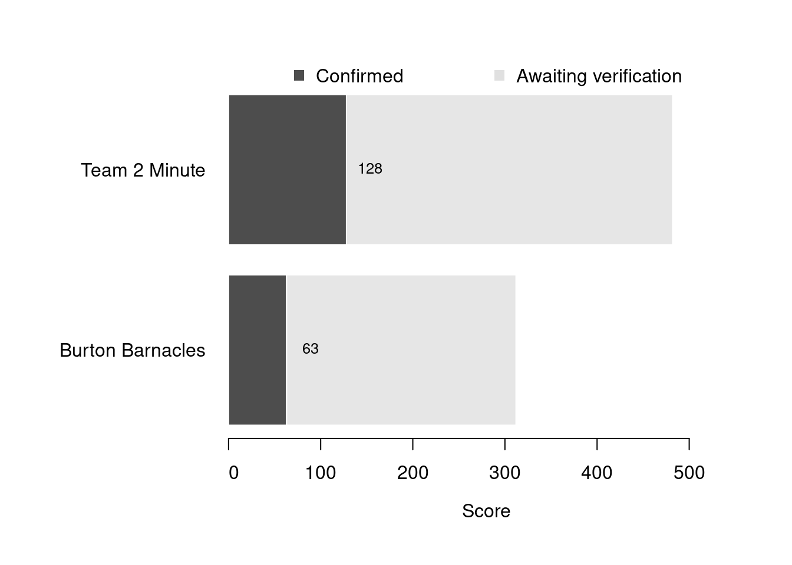

Content
You can view all the wildlife recorded at this event on iNaturalist.


| Records | 90 |
| Species | 32 |
| Verified species | 26 |
| Observers | 3 |
| Potential score | 606 |
| Confirmed score | 292 |
| Top verified species | Onchidella celtica |
| Top species rarity score | 38 |
| Registered participants | 4 |
| Children attending | 5 |
Congratulations to Team 2 Minute for taking the gold medal in this BioBlitz Battle! And well done to everyone for a great game and some fantastic wildlife finds.
| Team | Records | Potential Score | Confirmed Score |
|---|---|---|---|
| Team 2 Minute | 65 | 482 | 128 |
| Burton Barnacles | 25 | 312 | 63 |

| Participant | Records | Potential Score | Confirmed Score |
|---|---|---|---|
| liamtwominute | 30 | 417 | 120 |
| pearcefamily5 | 25 | 312 | 63 |
| claire2minute | 35 | 411 | 55 |
A total of 5 species have a verified rarity score of 13 or higher.


Community verified records only
Click any image to view the taxon on iNaturalist.
| Name | Rarity Score | |
|---|---|---|

|
Celtic Sea Slug - Onchidella celtica | 38 |

|
Twin Fanworm - Bispira volutacornis | 28 |

|
By-the-wind Sailor - Velella velella | 16 |

|
Honeycomb Worm - Sabellaria alveolata | 14 |

|
Gem Anemone - Bunodactis verrucosa | 13 |

|
crumb-of-bread sponge - Hymeniacidon perlevis | 12 |

|
Christmas Tree Worms - Spirobranchus | 12 |

|
Pacific Oyster - Magallana gigas | 11 |

|
Irish Moss - Chondrus crispus | 10 |

|
Spiny Spider Crab - Maja brachydactyla | 10 |

|
Lined Top Shell - Phorcus lineatus | 10 |

|
Japanese Wireweed - Sargassum muticum | 10 |

|
European Common Cuttlefish - Sepia officinalis | 10 |

|
Common Coralline - Corallina officinalis | 9 |

|
Blue Mussel - Mytilus edulis | 9 |

|
Glass Shrimps - Palaemon | 9 |

|
Purple Topshell - Steromphala umbilicalis | 9 |

|
Gutweed - Ulva intestinalis | 9 |

|
Atlantic Beadlet Anemone - Actinia equina | 8 |

|
snakelocks anemone - Anemonia viridis | 8 |

|
Symmetrical Sessile Barnacles - Balanomorpha | 8 |

|
bladder wrack - Fucus vesiculosus | 8 |

|
European Green Crab - Carcinus maenas | 7 |

|
Patella Limpets - Patella | 7 |

|
Littorina | 6 |

|
Shanny - Acanthomorpha | 1 |